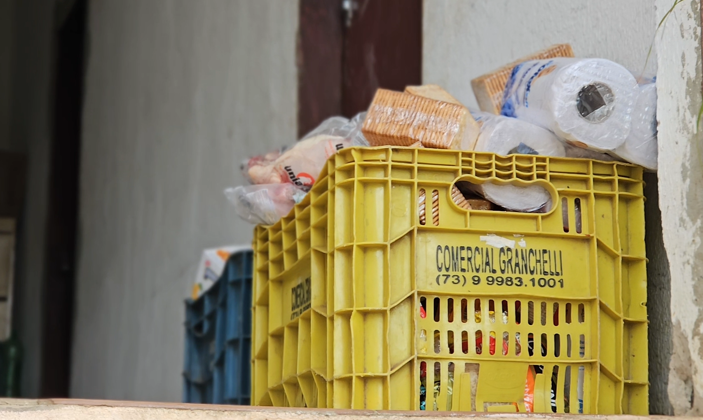
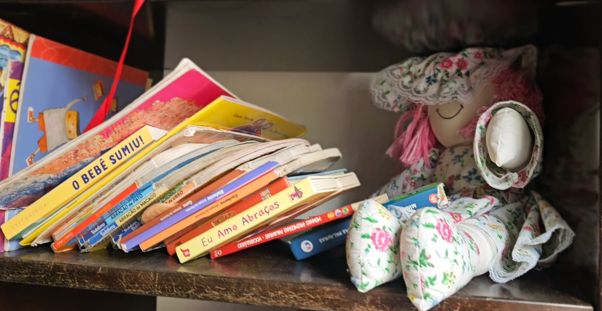

As doações são fundamentais para apoiar projetos sociais e garantir a continuidade das ações desenvolvidas. Por meio delas, é possível oferecer recursos, materiais e melhores condições para atender as pessoas beneficiadas pelo projeto. Além de contribuir para uma causa importante, doar também é uma forma de promover solidariedade, cuidado e transformação social na comunidade.
As doações podem ser entregues diretamente na portaria de nossa unidade, onde sempre há um colaborador disponível para recebê-las.
De domingo a domingo, em horário comercial.


Contribua para transformar vidas.
As doações financeiras ajudam a manter e ampliar as atividades da Casa das Pérolas, possibilitando a continuidade dos serviços de acolhimento, alimentação, educação e cuidado oferecidos às pessoas atendidas pela instituição.
Associação Clube de Mães do Lar Pérolas de Cristo
Você pode contribuir de forma simples e segura apontando a câmera do celular ou copiando a chave abaixo.